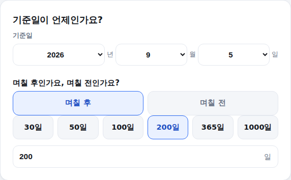

계약 만료일까지 며칠 남았는지, 특정 날짜로부터 100일째 되는 날이 언제인지 궁금할 때가 있습니다. 날짜 계산기는 두 날짜 사이 일수와 N일 후·전 날짜를 요일까지 함께 계산해드립니다. 쓰는 법은 아래와 같습니다.
-
계산 모드 선택 후 날짜 입력
맨 위 탭에서 "두 날짜 사이 일수"와 "N일 후·전 날짜" 중 원하는 계산을 고르세요. "두 날짜 사이 일수"를 골랐다면 시작일과 끝일을 연도·월·일 드롭다운에서 순서대로 선택하면 됩니다.
시작일·끝일 입력 화면
-
결과 확인 — 일수·요일·주 환산
맨 위에 일수 차이가 크게 나오고, 그 아래 시작일·끝일에 요일이 함께 표시됩니다. 바로 밑에서 주 단위 환산(몇 주 며칠)까지 한 화면에서 확인할 수 있습니다.
결과 화면
-
N일 후·전 날짜 계산하기
"N일 후·전 날짜" 탭을 선택하면 기준일과 방향(며칠 후/며칠 전)을 고르고, 자주 쓰는 일수(30·50·100·200·365·1000일) 버튼을 누르거나 직접 숫자를 입력할 수 있습니다.

기준일·일수 입력 화면
"초일 불산입" 방식으로 계산합니다
두 날짜 사이 일수는 시작일을 계산에 포함하지 않는 초일 불산입 방식(끝일 − 시작일)으로 계산합니다. 예를 들어 1월 1일부터 1월 2일까지는 1일 차이입니다. 계약 기간, D-day, 근무일수 등을 셀 때 일반적으로 쓰이는 방식입니다.
윤년도 정확히 반영합니다
N일 후·전 날짜를 계산할 때 2월 29일이 있는 윤년과 월별 일수 차이(28~31일)를 모두 반영해, 몇 년 앞뒤로 넘어가더라도 정확한 날짜와 요일을 계산합니다.
계산은 참고용입니다. 기준: 그레고리력, 2026년 기준 정리.